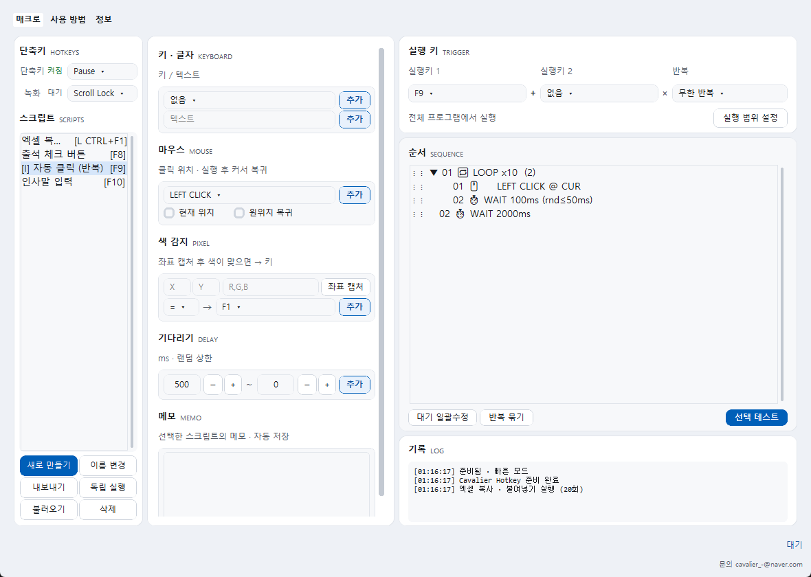
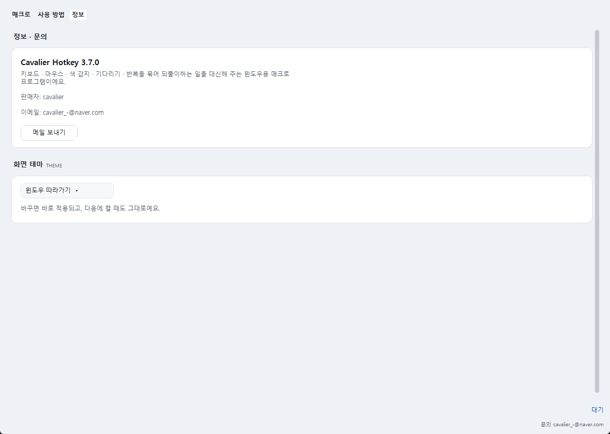
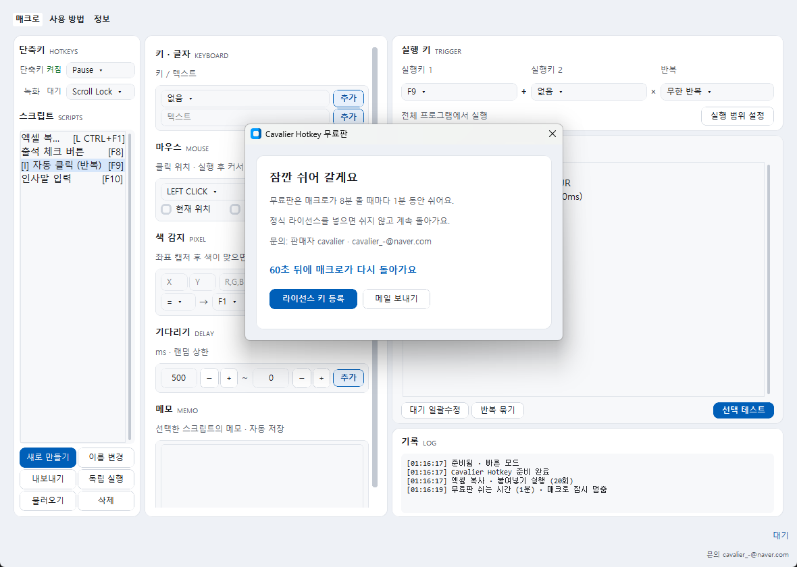

반복하는 일은
단축키 한 번으로
키 입력, 클릭, 색 확인, 기다리기를 순서대로 묶어 두세요. 복사 · 붙여넣기, 같은 버튼 누르기, 인사말 입력처럼 매일 되풀이하는 일을 정한 키 하나로 끝내요.

매크로에 필요한 것만 담았어요
왼쪽에서 스크립트를 고르고, 가운데에서 동작을 추가하고, 오른쪽에서 실행 키를 정하면 끝이에요.
⌨️ 키 · 글자
키 하나, 누름 · 놓음, 긴 문장 입력까지. 한글 문장도 그대로 입력해요.
🖱️ 마우스
왼쪽 · 오른쪽 · 휠 클릭, 더블 클릭, 휠 굴리기, 곡선 이동. 실행 뒤 커서를 원래 자리로 돌릴 수도 있어요.
🎨 색 감지
화면의 한 점이 정한 색이 되면(또는 아니면) 키를 눌러요. 색이 바뀔 때까지 기다리게 할 수도 있어요.
⏱️ 기다리기
동작 사이에 쉬는 시간을 넣고, 매번 조금씩 다르게 기다리게 할 수 있어요.
🔁 반복 묶기
여러 동작을 골라 묶음으로 반복해요. 묶음 안에 묶음도 넣을 수 있어요.
🎯 특정 프로그램에서만
정한 프로그램이 앞에 있을 때만 실행하고, 다른 창으로 바뀌면 멈춰요. 창 기준 좌표도 쓸 수 있어요.
⏺️ 녹화
녹화 키를 누르고 평소처럼 하면 키 · 클릭 · 기다린 시간까지 순서로 만들어져요.
🧩 독립 실행
자동 클릭처럼 뒤에서 계속 돌아야 하는 스크립트를 다른 스크립트와 함께 돌려요.
💾 자동 저장 · 되돌리기
고치면 바로 저장하고, 실수하면 Ctrl+Z나 변경 기록에서 되살려요. 스크립트를 파일로 내보내고 불러올 수 있어요.
화면 둘러보기
모두 실제 프로그램 화면이에요. (예시 스크립트)

한 화면에서 만들고 고쳐요
가운데에서 [추가]를 누르면 오른쪽 순서에 들어가요. 두 번 누르면 고치고, 왼쪽 손잡이로 끌어서 순서를 바꿔요.
- 실행 키 두 개 조합 (예: 왼쪽 Ctrl + F1)
- 반복 횟수 또는 계속 반복
- 스크립트마다 메모

반복은 묶어서 깔끔하게
같은 동작을 여러 번 쓰지 않고 '반복 묶기'로 묶어요. 자동 클릭처럼 계속 돌릴 스크립트는 독립 실행으로 다른 매크로와 함께 돌려요.

밝게 · 어둡게
[정보] 탭에서 화면 테마를 고를 수 있어요. '윈도우 따라가기'로 두면 윈도우 설정에 맞춰 바뀌어요.
안심하고 쓰도록
매크로는 내 키보드 · 마우스를 대신 움직여요. 그래서 '언제든 멈출 수 있게'가 먼저예요.
ESC는 언제나 먹어요
어떤 매크로가 돌고 있어도 ESC 한 번이면 전부 멈추고, 누르고 있던 키 · 버튼도 놓아요.
엉뚱한 창에 입력하지 않게
'지정 프로그램'으로 정하면 그 프로그램이 앞에 있을 때만 실행하고, 창이 바뀌면 멈춰요.
PC 안에서만
스크립트와 설정은 내 PC에만 저장해요. 인터넷으로 보내지 않아요.
잃어버리지 않게
자동 저장에 변경 기록 30개까지. 예전 버전 설정도 그대로 불러와요.
시작하기
설치 없이 압축만 풀면 바로 써요.
내려받기
아래 버튼으로 zip 파일을 받아요.
압축 풀고 실행
원하는 곳에 압축을 풀고 CavalierHotkey.exe를 실행해요.
스크립트 만들기
[새로 만들기] → 동작 [추가] → 실행 키 정하기. 처음 7일은 모든 기능이 무료예요.
무료로 써 보고, 마음에 들면 라이선스
내려받기는 무료예요. 처음 7일은 모든 기능을 그대로, 그 뒤에도 무료판으로 계속 쓸 수 있어요.

무료판의 쉬는 시간
7일이 지나면 매크로가 8분 돌 때마다 1분 동안 안내 창이 떠요. 그동안 매크로는 잠시 멈췄다가, 1분 뒤 멈춘 곳부터 이어서 돌아요.
편집만 할 때는 뜨지 않아요. 안내 창에서 바로 라이선스 키를 넣을 수 있어요.
자주 묻는 질문
7일이 지나면 어떻게 되나요?
무료판으로 계속 쓸 수 있어요. 매크로가 8분 돌 때마다 1분 쉬어요. 라이선스 키를 넣으면 쉬지 않고 돌아가요.
게임에서 써도 되나요?
게임마다 매크로를 금지하는 규칙이 있을 수 있어요. 쓰기 전에 그 게임의 이용 약관을 꼭 확인해 주세요. 규칙 위반으로 생긴 불이익은 책임질 수 없어요.
어떤 프로그램에서는 입력이 안 돼요.
관리자 권한으로 실행된 프로그램에는 Cavalier Hotkey도 관리자 권한으로 실행해야 입력이 들어가요. 일부 보호된 프로그램은 입력을 막기도 해요.
매크로가 멈추지 않으면요?
ESC를 누르면 모든 매크로가 바로 멈춰요. 단축키 켜짐 키(기본 Pause)로 단축키 전체를 끌 수도 있어요.
예전 버전에서 만든 스크립트도 쓸 수 있나요?
네. 설정과 스크립트를 그대로 불러와요. 지금 버전에서 쓸 수 없는 동작이 있으면 그것만 빼고 알려드려요.
인터넷에 제 정보를 보내나요?
아니요. 스크립트와 설정은 PC에만 저장해요. 켤 때 홈페이지에서 '사용 중지된 키 목록'만 받아 오고, 이때도 내 정보는 보내지 않아요.
"Windows의 PC 보호" 창이 떠요.
새 프로그램이라 나오는 안내예요. [추가 정보] → [실행]을 눌러 주세요.